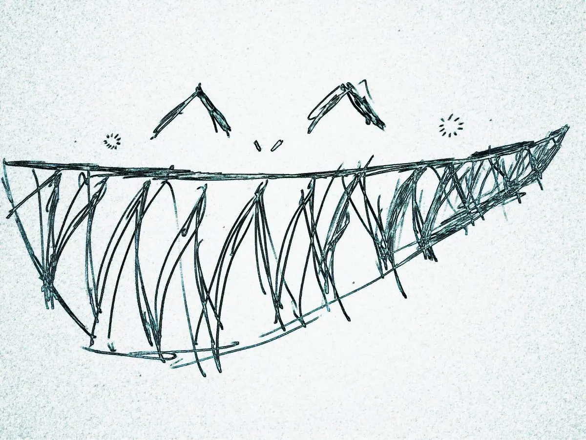

A new pet
Isabella, popular Isabella, got one first. Her aunt in the Alps had gifted it to her, after a trip to see the spring blossom. ‘I’m sorry about your hamster,’ she had said, ‘I’m sure it can never be replaced,’ she had continued, ‘but here is a new… all the way from Japan… it’s like a pet, and you’ll have to take care of
‘Gerbil’
‘I’m sorry?’
‘It was my gerbil. Jeremiah.’
‘Well here’s a tomogochee… all the way from Japan…’
And we crowded around Isabella when she first brought it to the playground.
‘What is it?’
‘Is it a Digimon?’
‘Does it speak?’
‘Does it fart?’
Isabella held her chin high, above the giggling, and slowly bestowed her snippets of wisdom. She prodded the new thing and the new thing squeaked. We squealed with excitement, and envy. ‘It’s a tomato-chee,’ she explained, ‘and it doesn’t fart. It poos.’
The next day, Hannah had one. The Monday after, James, Miriam, Luke, Megan, Other James, Olly, Meg 2, Leela and Chloe also had one. Soon, everybody else had stopped kicking a ball about or skipping or gossipping, they were all caring for their new pets. After bargaining with Meg 2 and promising her I wouldn’t ever tell anybody that – ah, you almost got me – I got one too. It was pink, it had three buttons, it was a bit scuffed on the left side, and it was mine.
I cradled the blobular avatar, I watched its mouth open and close, I pressed the three buttons and gawped unknowingly at the undecipherable symbols floating on screen. I was happy. Two days later, it was dead.

Nowadays, I have multiple Tamagotchis and have learnt their languages of beeps and symbols. I nurture them and nurse them; I keep them alive. At home, I have two big Tamagotchis who are fairly low maintenance: they need occasional updating, a few parts replacing, an occasional scrub. Nothing much. I’ve given sufficient vaccinations to one so that it no longer requires antivirus. My housemates and I fawn over the other one. Most evenings we prepare our dinners and eat our food sitting on the sofa in its glowing presence for hours on end.
A smaller Tamagotchi lives in my pocket and sleeps under my pillow. It purrs and buzzes, flashes and blinks. I tend to it fifty times a day: checking its status, keeping it topped up, silencing it when it all becomes too much. But it’s my newest Tamagotchi I’m most excited about. It’s strapped to my wrist and knows all about me. I’m outside playing football, it deduces. My heart is beating at 132 beats per minute, it informs me. I’ve walked more than the target it’s set for me, it congratulates me. Low battery, it lets me know. Please charge me, it demands. I stop with the ball and stare at the back of my wrist. Charge me, it demands. I stare. Charge. Me. I unstrap the Tamagotchi. I feel its metal weight. I hold it in my hands, and I watch it die.